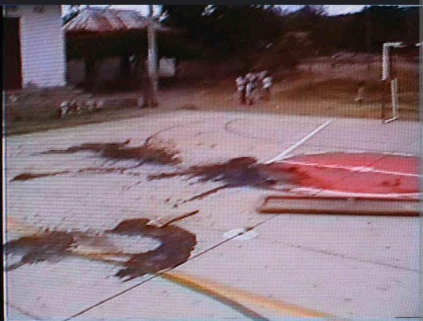

Territorio
El Corregimiento Villa del Rosario, comúnmente llamado El Salado, está ubicado en el municipio de El Carmen de Bolívar, departamento de Bolívar, Colombia. Hace parte de la región de los Montes de María. Está situada en la llamada baja montaña montemariana a una distancia de 20 km de la cabecera municipal El municipio tiene una extensión de 954 km², y una población oficial en 2019 de 70.000 habitantes aprox. dedicados principalmente al comercio y la agricultura, especialmente aguacate, tabaco, ñame, ajonjolí, yuca y cacao. Su Cabecera municipal se ubica en la margen izquierda del Arroyo Alférez.Sus tierras se encuentran en el clima cálido, la humedad relativa promedio anual es de 76 % y la temperatura promedio anual es de 27,4 °C, siendo marzo el mes de mayor temperatura y noviembre el de menor.
Responsabilidad del estado
El Tribunal Administrativo de Bolívar ratificó el fallo en primera instancia proferido en contra de la Nación, por una aparente omisión del Ministerio de Defensa, la Armada Nacional y la Policía Nacional, frente a una reacción oportuna a lo que fue la masacre de El Salado, Bolívar, perpetrada por las Autodefensas Unidas de Colombia, en febrero del año 2000.
El magistrado Roberto Chavarro, le comentó a EL HERALDO que “este es un fallo en segunda instancia que está confirmando una decisión del Juzgado N° 13 Administrativo del Circuito de Cartagena, que profirió sentencia en primera instancia”.
El primer fallo habría dejado por sentada lo que sería la configuración de una omisión en el deber de protección que tiene el Estado para con los ciudadanos. “Y en segunda instancia también se encuentra que está probada la falla en el servicio”, agrega el magistrado Chavarro.
Con relación al fallo condenatorio inicial, en la decisión de segunda instancia se hicieron algunas modificaciones como la depuración del grupo de accionantes y el monto de indemnización, que pasó de estar en un pago de 150 salarios mínimos legales vigentes a 120 smlv, para cada uno de los integrantes del grupo de demandantes”.
En este caso fue revocada la condena en ‘costa’ que había sido proferida en primera instancia, en la que se le obligaba al Estado a resarcir los gastos en defensa en lo que habría incurrido la parte ganadora para asumir el debate jurídico.
Tras la depuración, solo unas 30 personas quedaron siendo beneficiarios directos de la indemnización fallada, sin embargo, las autoridades habilitarán tiempos en los que los ciudadanos que se consideren con derechos, podrían presentarse con los documentos de rigor a sustentar su derecho a integrar el grupo.
“Esta es una acción de grupo, por lo que se ordena que se realice una publicación de la sentencia en un diario de circulación nacional para efecto de quien se considera con derecho de integrar el grupo, lo haga dentro del plazo que se señale en la parte resolutiva”, indicó el togado.
Esta sentencia cobija a las personas que fueron desplazadas de la violencia luego de sobrevivir a la masacre de El Salado.
politica
En el año 2000, Colombia experimentó un contexto político y social complejo, marcado por el conflicto armado interno, la presencia de grupos guerrilleros como las FARC y el ELN, así como los grupos paramilitares. También se llevaron a cabo elecciones presidenciales y se implementaron políticas de seguridad y desarrollo económico.
Sociedad
Los sobrevivientes han ido regresando tímidamente. “Dudé en volver pero me estaba muriendo de nostalgia”, dice Efraín Varela Ortiz, de 79 años, quien retornó hace un año. El abuelo es de respuestas rápidas, aunque dudó cuando los enviados especiales de SEMANA le preguntaron qué pensaba del proyecto de ley de libertad condicional para los grupos armados ilegales autores de matanzas como la que se llevó a siete de sus seres queridos, entre ellas dos de sus hijas. En total y dependiendo de la fuente oficial que se consulte, hubo entre 40 y 66 muertos.”Yo creo en Dios y Dios nos habla del perdón, pero en este caso esdifícil porque esos señores no pueden estar libres, dice. Esos señores no están en sus cabales”, explica.